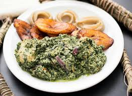
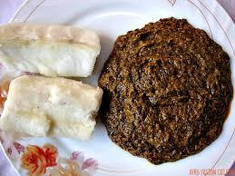
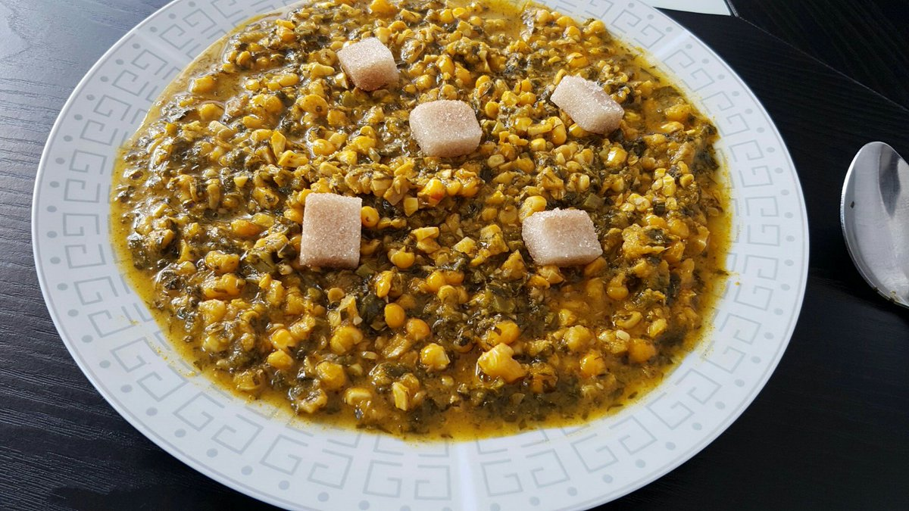
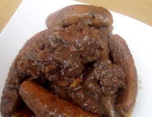
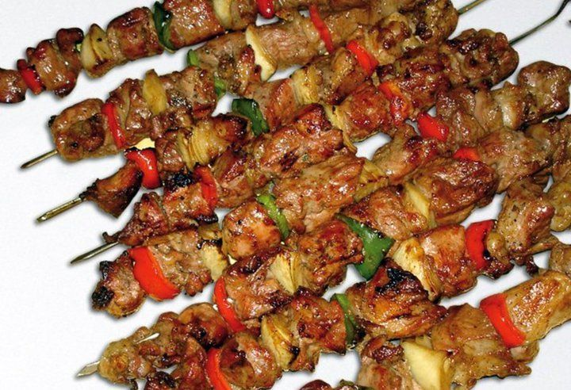
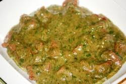
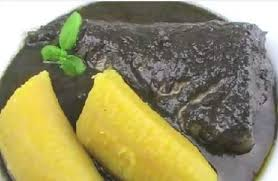

decouvrez nos délices et leur recette
-
Le Ndolé
Le ndolé est le plat national du Cameroun. Ce sont simplement des feuilles, un peu comme des épinards, cuites avec une pâte d'arachides, préparées avec des crevettes, du poisson fumé ou de la viande et des plantains frits. Ici, des crevettes.
voir la recette -
le Eru

Ce plat venu du nord-ouest du Cameroun est un mélange de légumes : l’okok et le water leaf, une sorte d’épinards à petites feuilles. Il n’est pas toujours facile de trouver tous ces ingrédients surtout lorsqu’on vit hors des frontières : on peut remplacer le water leaf par de l’épinard en branches.
voir la recette -
l'Okok
Plat typique des Bétis, tribu de la région du centre du Cameroun, l'okok (aussi appelé fumbwa) est fait à base de feuilles Gnetum découpées très finement, bouillies avec du beurre de cacahuètes et du jus de noix de palme. Il se mange accompagné de tubercules.
voir la recette -
le Sanga
Un plat de légumes (feuilles de zom), maïs et pulpe de noix de palme apprécié dans le sud du Cameroun.
voir la recette -
Le kondré
Le kondre ou potée de plantains est un plat de l'Ouest du Cameroun où il est très prisé lors des funérailles et autres cérémonies. Le kondré est associé au porc, au boeuf ou au poisson frais.
voir la recette -
Le Soya
un plaisir incontournable est de déguster le soya, des brochettes de viande cuites au feu de bois qu’on vend à tout les coins de rue, il sont souvent servi sur une feuille de papier accompagné de poivre et de piment.
voir la recette -
Sauce Gombo
Le gombo est un fruit en forme de capsule employé comme légume et comme condiment. Sa section transversale forme un pentagone. Sa peau est couverte de soies duveteuses. La sauce gombo est très populaire dans toute l'Afrique. Ici, elle accompagne une viande de boeuf dans une excellente recette simple à réaliser.
voir la recette -
Le Mbongo'o
Le Mbongo est un plat sawa aux épices brûlées. Il est plus ou moins noir selon les régions et les goûts de chacun.
voir la recette